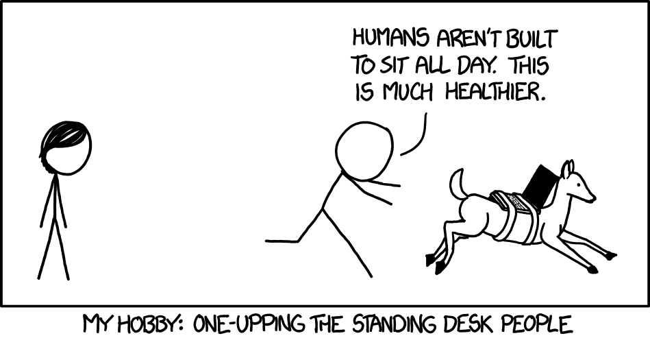

Welcome to my little corner of the web! 🌟
I’m glad you stopped by. This space is where I share a bit about myself, my work, and the things that inspire me.
Whether you're here to explore my research, learn more about my interests, or just stumbled upon the site, I hope you find something engaging and useful.
Heads Up
This site is a constant work-in-progress, so please excuse any dust or unfinished pages as I continue to build and refine it. But hey, that’s the beauty of creation, right? 🛠️
Erlend in a Nutshell
Half mathematician, half computer scientist, and entirely curious about the world. I love finding patterns, solving puzzles, and asking questions that lead to more questions.
A picture of me (with some friends).
About
Origin Story
I’m Erlend Raa Vågset, soon to defend my PhD at the University of Bergen (UiB), where I’ve had the opportunity to work with Nello Blaser and Michael Ralph Fellows. My research spans algorithms, machine learning, and computational topology – all driven by a deep curiosity for the unexplored and the complex.
Currently, I’m an Assistant Professor at HVL Førde, teaching Computer Science and Informatics. My academic interests include complexity theory, algorithms, and topology, where I enjoy exploring theoretical puzzles and expanding our understanding of these fascinating fields.
Work
I'm an Assistant Professor in Computer Science at the Western Norway University of Applied Sciences (HVL), specifically at the Førde campus—a tiny city tucked deep within the stunning fjords. I’ve just submitted my PhD in algorithms and machine learning at the University of Bergen (UiB).
My PhD research focused on the computationally challenging problem of finding optimal geometric representations of global topological features in data. Sounds complicated, right? Well, it is. But it’s also incredibly exciting!
More broadly, I’m interested in complexity theory, computational topology, and exploring how abstract concepts in these fields can lead to new insights and discoveries. If you're curious to know more, feel free to check out my research interests page.
Yes, the view of Førde is pretty much like this.
Life
Don’t worry, I’m not just a nerd! Over the years, I’ve gathered a broad collection of hobbies in what can only be described as a heroic attempt to appear more interesting than I really am.
My adventurous side includes climbing, swimming, hiking, kayaking, skiing, weightlifting, and windsurfing (though not all at the same time!). But when I’m not outdoors, you can catch me playing board games, listening to music, or experimenting with homebrewing.

A comic that sums up my ever-growing list of hobbies perfectly.
Contact
Get in Touch
I'm always happy to connect! You can reach me via email at: "firstname"."middlename".vagset at hvl.no
Not actually my cabin, but wouldn't that be nice?
Online Presence
Want to explore my work or keep up with what I'm doing? Find me here: